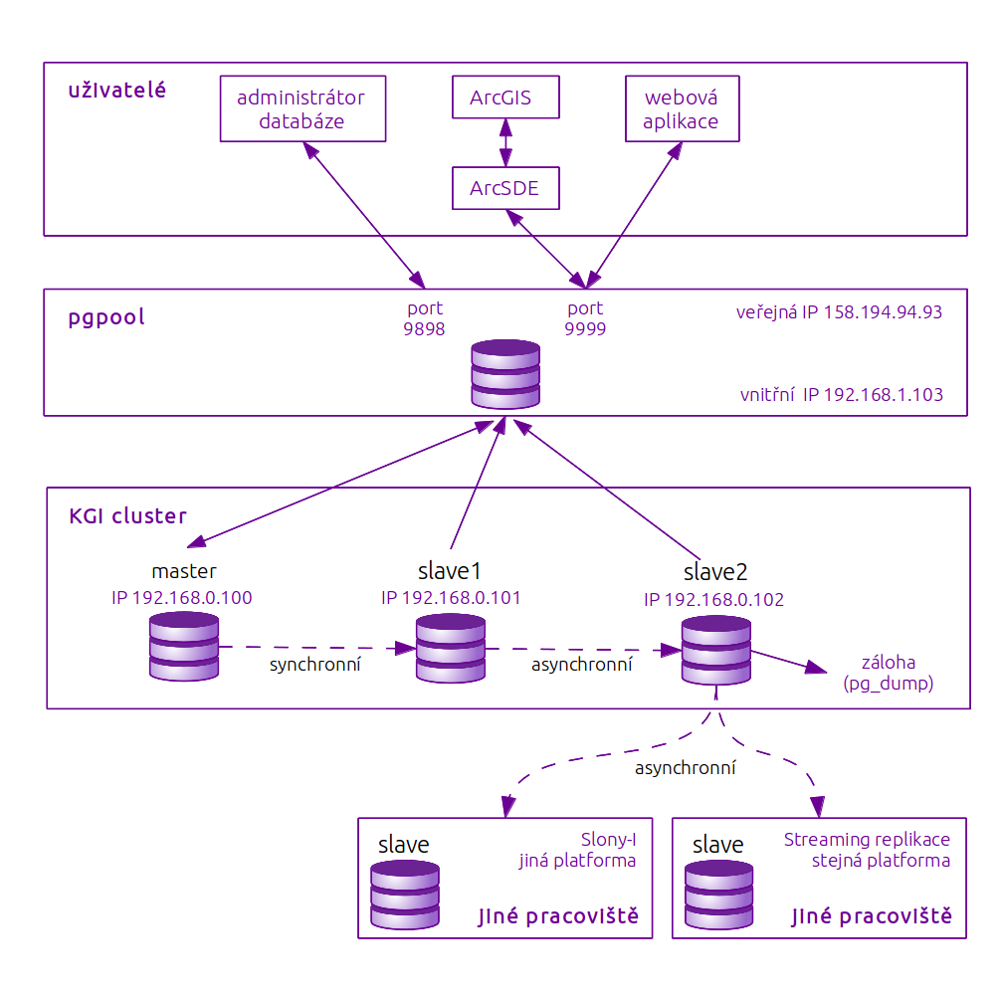

Po provedení rešerše a zohlednění všech požadavků a možností katedry geoinformatiky, byl sestaven návrh kompletního databázového řešení založeného na procesu replikace. Byl vybrán databázový server PostgreSQL hned z několika důvodů. Jedná se o plnohodnotný databázový systém dostupný zdarma se všemi nástroji, je široce používaný v oblasti geoinformačních technologií, je multiplatfomní a od verze ArcGIS 9.3 plně podporováný produkty ArcGIS. Návrh počítá s použitím ArcSDE pro propojení databáze s ArcGIS produkty. Při výběru jednotlivých verzí je nutné zajistit kompatibilitu verzí jednotlivých software a poté ArcSDE nainstalovat na servery v clusteru.
Byl navržen replikační cluster s nejméně třemi servery z důvodů. Celý cluster poběží na stejné platformě a proto bude možno použít streaming replikaci se všemi výhodami a nevýhodami zmíněnými v sekci o replikaci. Byla zvolena jednosměrná master-slave replikace, cluster tedy bude obsahovat jeden master a dva (popř. více) slave serverů. Aby nedošlo ke ztrátě dat v případě, že by master server spadl dřív, než se data zkopírují na slave server, pro první slave (slave1) byla zvolena varianta synchronní replikace. Je vhodné, aby servery běžely v lokální síti z důvodu rychlosti a spolehlivosti spojení mezi master a slave serverem.
Druhý server (slave2) bude replikovat asynchronně a zároveň, aby nedocházelo k přetížení master serveru, bude replikace probíhat ze slave1 na slave2, tedy kaskádově. Tím bude řešení zároveň přípraveno na výpadek master serveru, protože v případě master vypadne, slave1 bude povýšen na master a slave2 bude ihned moci replikovat. Ze slave2 lze dále tvořit pravidelnou, například denní nebo týdenní, zálohu pomocí ulitily pg_dump. Záloha pomocí pg_dump tak nebude zatěžovat master server a sama o sobě bude probíhat rychleji, než by tomu bylo na master serveru, který je již tak velmi vytížen dalšími procesy.
Uživatelé se budou připojovat skrze pgpool, který se bude tvářit jako jediný databázový server a ke kterému se klienti přihlásí bez ohledu na typ jejich dotazu. On sám pak rozhodne, ke kterému ze serverů klienta přihlásí. Tím bude mít zároveň možnost rozložit zátěž na dostupné uzly v clusteru. Pro ještě větší efektivitu provozu databáze bude pgpool uchovávat databázová spojení a při novém dotazu využije stávajícího spojení, místo aby vytvářel spojení nové.
Vzhledem k tomu, že klienti budou k databázovému serveru přistupovat skrze pgpool, není potřeba aby jednotlivé uzly v clusteru měly veřejnou IP adresu. Plně dostačuje, že servery poběží na lokální síti a pouze pgpool bude na serveru s veřejnou IP, čímž se zajistí, že data budou přístupná z internetu.
Návrh počítá také s externími pracovišti, která budou často číst z databáze a budou mít zájem o zrychlení přístupu k datům tím, že se slave server přesune na jejich pracoviště. Typ replikace se zvolí podle jejich operačního systému a jeho architektury. Pokud se bude jednat o shodný systém, jaký bude použit ve výše popsaném clusteru, pak bude možno použít asynchronní streaming replikaci, naopak pokud se bude bude jednat o systém jiný, bude použita Slony-I replikace.